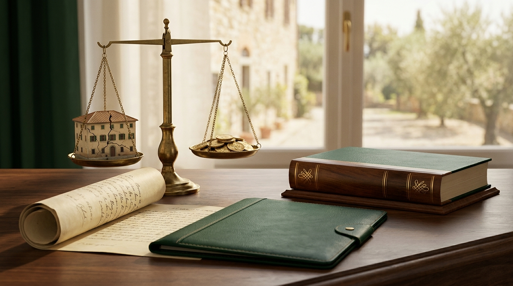

Riconsegna dell'immobile danneggiato: il canone si paga anche durante i lavori
Chi lascia l'immobile in condizioni peggiori di quelle ricevute non chiude il rapporto restituendo le chiavi. La Cassazione ha ribadito che il canone continua a maturare fino al termine dei lavori di ripristino, perché finché l'immobile resta inutilizzabile il proprietario non può rimetterlo a reddito. Una pronuncia che incide sui doveri di restituzione del conduttore.

Il caso
Un conduttore restituisce l'immobile al termine della locazione, ma in condizioni non conformi a quelle in cui lo aveva ricevuto: pavimenti, impianti e finiture danneggiati oltre il normale deterioramento d'uso. Il proprietario avvia i lavori di ripristino e, per il periodo necessario a renderlo nuovamente abitabile, pretende il pagamento del canone. La controversia arriva fino in Cassazione, che dà ragione al locatore.
Il principio è netto: la riconsegna formale delle chiavi non basta a liberare l'inquilino dall'obbligo di pagamento. Finché l'immobile resta inutilizzabile a causa dei danni che lui stesso ha provocato, il rapporto economico non si chiude davvero.
Inquadramento normativo
Il punto di partenza è l'art. 1590 del Codice civile, che impone al conduttore di restituire la cosa nello stato in cui l'ha ricevuta, salvo il deterioramento o il consumo derivante dall'uso normale. È la cosiddetta "usura ordinaria": la tinteggiatura sbiadita o il pavimento un po' segnato rientrano nella fisiologia dell'abitare. I danni che vanno oltre questa soglia, invece, restano a carico dell'inquilino.
Il secondo pilastro è l'art. 1591 c.c., che disciplina la mora del conduttore nella restituzione. La norma prevede che chi è in ritardo nel riconsegnare l'immobile debba al locatore il corrispettivo convenuto fino alla riconsegna, salvo il maggior danno.
La Cassazione collega le due disposizioni: una riconsegna avvenuta con l'immobile in stato tale da renderlo inutilizzabile non è una riconsegna idonea. In pratica, finché il bene non è in condizioni di poter essere goduto dal proprietario o riaffittato, l'obbligo di corrispondere il canone permane. Il periodo dei lavori di ripristino viene quindi equiparato, ai fini economici, al ritardo nella restituzione.
Implicazioni pratiche
Per il conduttore il messaggio è chiaro: la fine del contratto e la consegna delle chiavi non interrompono automaticamente gli obblighi economici. Se l'immobile viene restituito danneggiato, il canone continua a maturare per tutta la durata oggettivamente necessaria al ripristino, oltre al risarcimento del danno vero e proprio.
Per il proprietario la pronuncia rafforza una tutela importante. Il tempo dei lavori non è un costo che resta a suo carico: durante quel periodo l'immobile non produce reddito proprio perché il conduttore lo ha reso inutilizzabile, e questa perdita può essere recuperata.
Resta però decisivo l'onere della prova. Il locatore deve dimostrare lo stato dell'immobile alla consegna iniziale e quello alla riconsegna, l'entità dei danni e la durata congrua dei lavori. Senza riscontri documentali, la pretesa rischia di non reggere in giudizio.
Cosa fare in concreto
- Redigete sempre un verbale di consegna dettagliato, all'inizio e alla fine della locazione, corredato da fotografie datate e, dove possibile, da una descrizione analitica dello stato dei locali e degli impianti.
- Documentate i danni con perizia o preventivi: i lavori di ripristino devono essere proporzionati e giustificati, non un pretesto per migliorie a carico dell'inquilino.
- Quantificate la durata congrua dei lavori: il canone è dovuto per il tempo effettivamente necessario al ripristino, non per ritardi imputabili al proprietario.
- Inquilini: pretendete una riconsegna formale e condivisa, contestando per iscritto eventuali addebiti ritenuti eccessivi o riferibili alla normale usura.
- Verificate la copertura assicurativa: alcune polizze locative coprono i danni all'immobile, riducendo il contenzioso tra le parti.
La distinzione tra usura normale e danno resta il cuore della questione. Consigliamo di affrontare la fase di riconsegna con la stessa attenzione riservata alla stipula: è in quel momento che si fissano gli elementi su cui, in caso di lite, si gioca l'intera partita.
---
*Contributo informativo a cura di Tamburro & Partners - Avv. Giuseppe Tamburro. Non costituisce parere legale.*
Ogni contratto ha il suo equilibrio.
Se vuoi una revisione delle clausole o una redazione su misura, scrivi allo studio. Ti rispondiamo entro un giorno lavorativo.